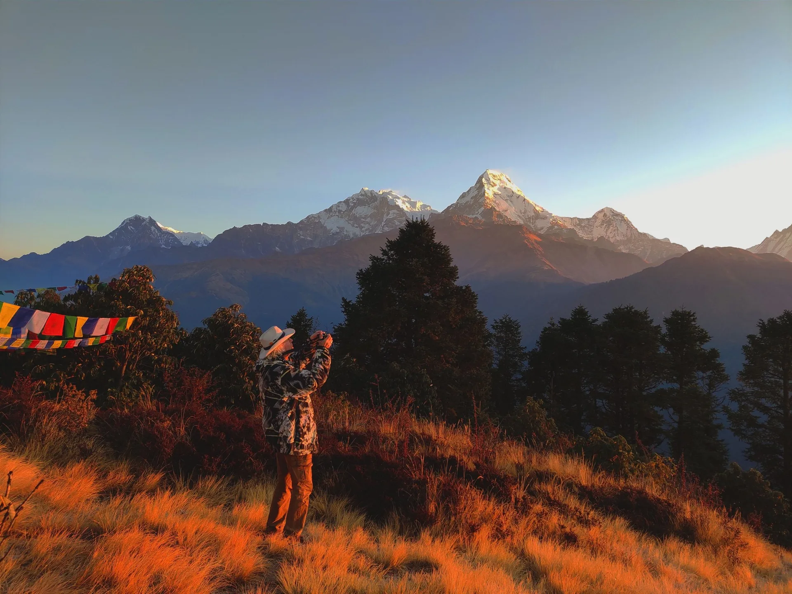
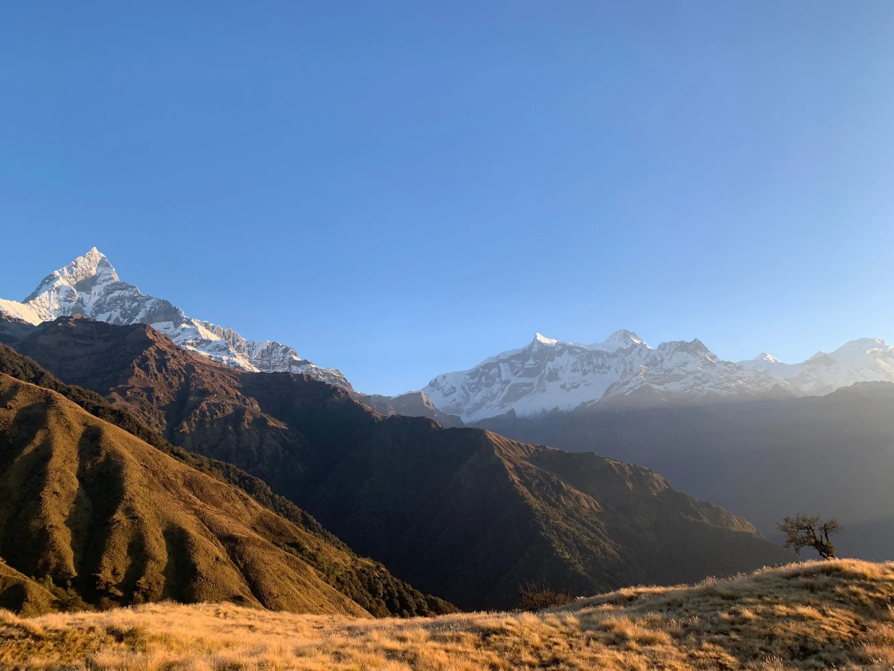
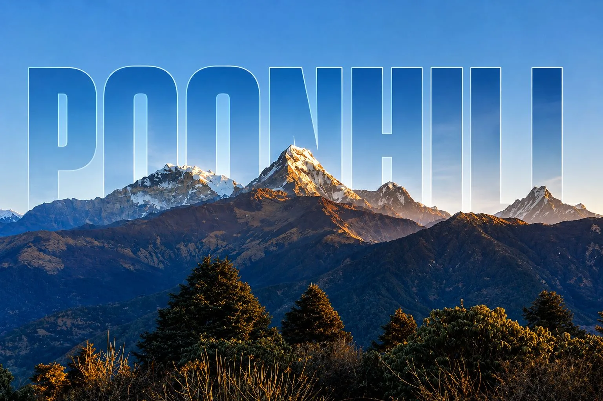
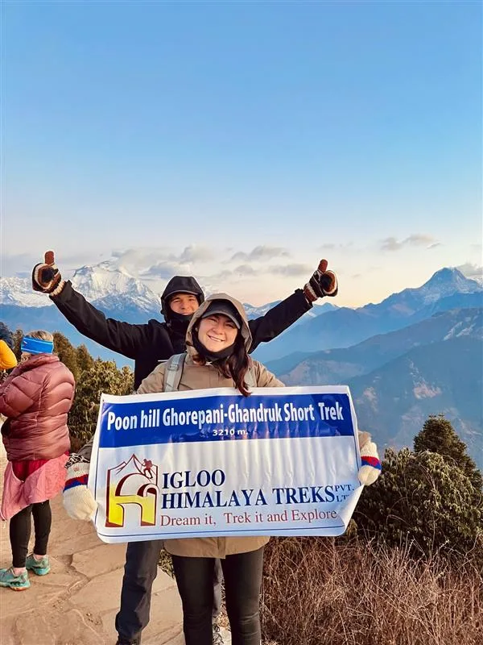

What Is the Mohare Danda Trek? Nepal's Community Eco-Trail
Mohare Danda (also called Mohare Danda Eco-Trail) is a high, grassy ridge in the Myagdi district of the Annapurna Conservation Area, reached by a short side trail from Ghorepani. It was developed by local communities as a sustainable, low-impact alternative to the busy Poon Hill circuit, and the lodges are managed collectively so that income stays in the villages.
At around 3,300 metres, the ridge offers a wide, uninterrupted panorama stretching from Dhaulagiri (8,167m) in the west to Annapurna South (7,219m), Hiunchuli, Machapuchare (6,993m) and Nilgiri in the east. Because few trekkers come here, you often have the sunrise to yourself.

Why Choose Mohare Danda: It combines the famed Poon Hill sunrise with solitude, community lodges and a gentler budget. It is ideal for beginners, families and anyone with only 5 to 7 days.
Geography & Trail Highlights: Where Mohare Danda Sits
Mohare Danda lies north of Beni and Tikot, above the Ulleri and Ghorepani ridgeline. The trail climbs through terraced Magar and Gurung villages, then into dense oak, magnolia and rhododendron forests that explode with red and pink blooms in spring.
Highlights include the Ulleri stone staircase, the forest corridor of Banthanti, the lively teahouse hub of Ghorepani, optional Poon Hill (3,210m) for sunrise, and the main prize: the high pastures and viewpoints of Mohare Danda itself. Birdlife is exceptional, with Himalayan monal, laughing thrushes and sunbirds often spotted at dawn.

Mohare Danda Trek Cost 2027: The Complete Budget Breakdown
Costs depend on group size, season, comfort level and whether you hire a porter. The table below shows realistic 2027 price ranges for a guided trek starting and ending in Pokhara.
| Package Type | Duration | Price per Person (USD) | What Is Included |
|---|---|---|---|
| Budget Group | 5 days | $420 - $480 | Guide, permits, transport, basic lodges, 3 meals |
| Standard Guided | 6 days | $520 - $600 | Guide, porter share, permits, private vehicle, lodges, meals |
| Comfort Private | 7 days | $600 - $650+ | Private guide, porter, best available lodges, extra rest day |
| Independent Cost Guide | 5 days | $250 - $330 | Estimated only; a licensed guide is required for foreign trekkers |
These prices cover almost everything except international flights, visas, travel insurance, personal gear rental, tips and drinks.
Line-by-Line Costs: Permits, Guide, Porter, Lodges & Meals
Understanding each component helps you compare agency quotes honestly and avoid hidden extras.
| Expense | Typical Cost | Notes |
|---|---|---|
| ACAP Permit | NPR 3,000 (approx. $23) | Annapurna Conservation Area entry |
| TIMS Card | NPR 2,000 (approx. $15) | Trekkers' information management |
| Licensed Guide | $30 - $35 per day | Mandatory for foreign trekkers in this region |
| Porter | $22 - $28 per day | Carries up to 20kg across two trekkers |
| Lodge Room | $3 - $10 per night | Free or cheap if you eat at the lodge |
| Meals | $20 - $28 per day | Dal bhat, noodles, eggs, tea; prices rise with altitude |
| Pokhara to Nayapul Transport | $40 - $70 round trip | Shared jeep or private car |
Watch Out for Hidden Fees: Always confirm that permits, taxes, guide insurance and airport pickups are included, and ask whether hot showers or battery charging cost extra at higher lodges.
Route Itinerary: Day-by-Day Walking Times & Altitudes
The classic itinerary lasts 5 to 6 days, with a 7th day available for relaxed pacing or extra exploration. Altitude gain is steady and manageable.
| Day | Route | Walking Time | Overnight Altitude |
|---|---|---|---|
| 1 | Pokhara to Nayapul, trek to Ulleri / Banthanti | 5 - 6 hrs | 2,250m - 2,250m |
| 2 | Banthanti to Ghorepani | 3 - 4 hrs | 2,860m |
| 3 | Ghorepani to Poon Hill sunrise, onward to Mohare Danda | 5 - 6 hrs | 3,300m |
| 4 | Mohare Danda sunrise, descend through forest | 5 - 6 hrs | 2,500m - 2,200m |
| 5 | Trek to roadhead, drive to Pokhara | 3 - 4 hrs + drive | 820m |
Your guide may adjust the descent route depending on trail conditions and lodge availability.
Combining Mohare Danda with Poon Hill
Most trekkers add the Poon Hill sunrise on the morning of Day 3. The climb from Ghorepani takes about 45 to 60 minutes and rewards you with a 360-degree panorama of more than 20 Himalayan peaks. Then you continue towards Mohare Danda for even quieter views and a second sunrise the following dawn.

If you want the ultimate comparison, read our guide to Ghorepani Poon Hill vs Mardi Himal and our Poon Hill Trek guide.
Community Lodges, Food & Accommodation
Lodges along the Mohare Danda route are simple and warm, usually with twin rooms, thick blankets, shared bathrooms and a central dining hall heated by a stove or yak-dung fire. At the ridge, facilities are slightly more basic: expect cold showers, limited charging and a small menu focused on dal bhat, noodles, pancakes and local tea.
- Community-owned: Many ridge lodges rotate bookings between local families, so income is shared fairly.
- Book ahead in peak season: October and April lodges can fill, especially at Ghorepani.
- Eat where you sleep: Staying and dining at the same lodge keeps prices low and supports owners.
Permits, TIMS & Guide Regulations for 2027
Foreign trekkers need an ACAP permit and a TIMS card, both of which Igloo Himalaya Treks arranges for you in Pokhara or Kathmandu. Since 2023 regulations require foreign nationals to trek with a licensed guide in most Annapurna trails, including Mohare Danda.
| Document | Cost (NPR) | Where to Get It |
|---|---|---|
| ACAP Permit | 3,000 | Nepal Tourism Board offices or licensed agency |
| TIMS Card | 2,000 | Arranged through a registered agency |
| Passport Copies + Photos | Free | Bring 2 passport photos and several copies |
Always carry original permits and your passport; checkposts at Ghorepani and Nayapul inspect them.
Best Season: Autumn Clarity vs. Spring Blooms
Autumn (October to November) brings crisp, stable skies and sharp Himalayan views, though it is the busiest period. Spring (March to May) offers warm days and spectacular rhododendron blooms, though afternoon haze can soften the peaks. Winter (December to February) is quiet and cold, with snow near the ridge, while the monsoon (June to September) brings leeches, mud and cloud cover.
| Season | Temperature at Ridge | Visibility | Crowds |
|---|---|---|---|
| Spring (Mar - May) | -2C to 12C | Good, some haze | Moderate |
| Autumn (Oct - Nov) | -3C to 11C | Excellent | High |
| Winter (Dec - Feb) | -10C to 5C | Crisp, snow | Very low |
| Monsoon (Jun - Sep) | 6C to 15C | Poor | Minimal |
Difficulty & Fitness: How Hard Is Mohare Danda?
Mohare Danda is rated easy to moderate. The maximum altitude of 3,300m is below the threshold where serious altitude sickness commonly appears, but the trail includes thousands of stone steps and steep ascents that challenge the knees and thighs. Anyone who can walk 5 to 6 hours a day with a light pack can finish it comfortably.
Train for 4 to 6 weeks with stair climbing, hill walks and light cardio. A smart, slow pace is far more effective than rushing. Even so, keep an eye out for headaches and nausea above 3,000m, and descend if symptoms persist.

Safety, Weather & Terrain Awareness
The route avoids high-altitude glaciers, but winter and early-spring snow can cover the ridge, making the path slippery. Fog and sudden storms can reduce visibility, and steep sidehills can be treacherous after rain.
- Stay on marked trails: shortcuts through steep grass can cause falls.
- Check weather daily: your guide monitors forecasts and local reports.
- Carry a headlamp and warm layers: dawn departures are dark and cold.
- Hydrate and acclimatise: sleep no more than 500m higher than the previous night above 3,000m.
Safety First: Always carry travel insurance that covers trekking up to 4,000m and emergency helicopter evacuation.
Essential Gear, Layering & Knee Preservation
Pack light but carefully. A 10 to 12kg daypack plus porter bag is plenty. Focus on the layering system and knee protection for the long stone staircases.
- Footwear: broken-in waterproof trekking boots plus camp sandals.
- Insulation: down jacket (rated to -10C), fleece, thermal base layers.
- Rain protection: waterproof jacket, trousers and a pack cover.
- Knee care: two trekking poles and a compression sleeve for descents.
- Essentials: sunscreen, sunglasses, water bottle, basic first aid and a power bank.
Pro Tip: Rent a down jacket and sleeping bag in Pokhara for $1 to $2 per day instead of buying them.
Getting to the Trailhead: Pokhara, Nayapul & Beyond
Fly or drive from Kathmandu to Pokhara (25 minutes by plane, 6 to 7 hours by road). From Pokhara, a 1.5 to 2 hour drive reaches Nayapul, the main gateway to the Ghorepani region. Private jeeps cost around $40 to $70 one way, shared jeeps far less.
| Transport | Duration | Approx. Cost |
|---|---|---|
| Kathmandu to Pokhara (flight) | 25 min | $100 - $130 |
| Kathmandu to Pokhara (tourist bus) | 6 - 7 hrs | $10 - $20 |
| Pokhara to Nayapul (private car) | 1.5 - 2 hrs | $40 - $70 |
Final Verdict & How to Book Your Mohare Danda Trek
Save smartly: join a small group departure to share guide and transport costs, travel in shoulder months, use water purification tablets instead of bottled water (saving $2 to $4 daily), carry small NPR notes since there are no ATMs on the trail, and rent gear in Pokhara. Never cut corners on guide quality, insurance or footwear.
The Mohare Danda trek is the most budget-friendly way to experience a true Annapurna sunrise ridge with community lodges and few crowds. Budget between $420 and $650 per person for a guided trek in 2027, bring warm layers, train your knees and travel in autumn or spring for the best views.
Want a longer Annapurna adventure? Compare it with our Khopra Ridge Trek guide or the Mardi Himal Trek.
Ready to go? Contact Igloo Himalaya Treks for a free personalised quote, licensed guides and flexible departure dates for 2027.

Ready to Experience the Himalayas?
Whether you are preparing for high-altitude trekking, cultural circuits, or alpine summit expeditions, start planning a bespoke journey tailored to your fitness, travel season, and style.